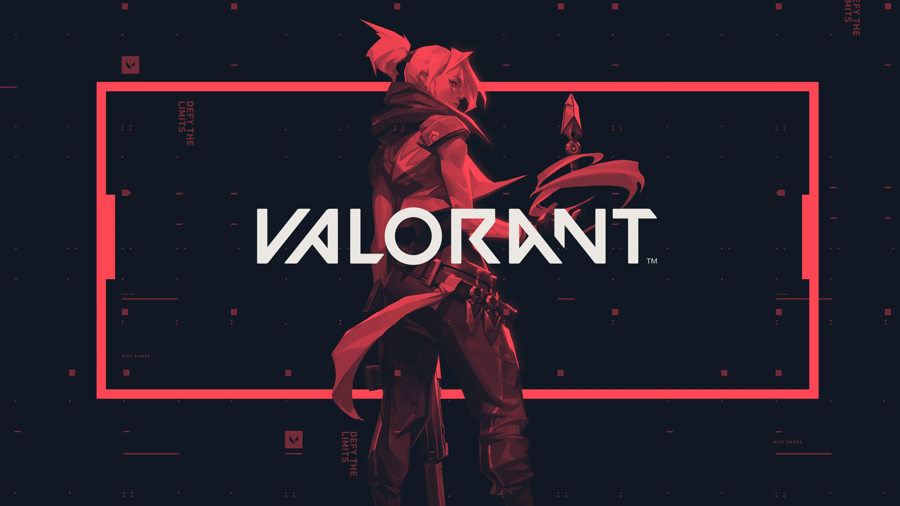

Overwatch is a superior game to Valorant
Overwatch was released by Blizzard in 2016. Since then the game has gone through countless patches and changes to make it as fun and fair as possible. The most recent of those changes being a massive overhaul to the game in which they called even changed the name to Overwatch 2. This change has been extremely well recieved from the community and has made the game relevant again. With the recent boost in popularity, the game is being compared to Valorant as to which game is better. In my opinion there is no doubt that Overwatch is superior.
To start, Overwatch has nearly double the amount of unique playable characters with 35 compared to Valorant's 20. This allows players to have far more options to choose form when playing, creating more opportunities for different ways to play the game. When we look at actual gameplay, the two games have similarities, but are overall very different. Overwatch is far more fast paced with each game being a continuos round with respawns opposed to Valorant's round system where there are no respawns. The fast paced gameplay requires you to always be engaged and active with no down time causing less dull moments.

Valorant is better than Overwatch and here is Why
Valorant is a free-to-play first-person hero shooter developed and published by Riot Games, for Microsoft Windows. First teased under the codename Project A in October 2019, the game began a closed beta period with limited access on April 7, 2020, followed by an official release on June 2, 2020. The development of the game started in 2014. Valorant takes inspiration from the Counter-Strike series of tactical shooters, borrowing several mechanics such as the buy menu, spray patterns, and inaccuracy while moving. Valorant was developed with two main focuses: making tactical shooters and e-sports more accessible to new players, and creating a game that would attract a large competitive scene, while solving many of the points of criticism voiced by professional players from games in the genre.
First of all, the biggest advantage is that it is a free-to-play game, so anyone who wants to can play. The game has a very well thought out ranking system compared to Overwatch. Furthermore, Riot Games very responsibly approached the updates in the game, causing the number of bugs to be very minimal. It has the best anti-cheat system in any game ever, that detects the cheater almost instantly, which makes the game better for honest players.